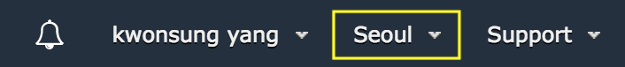
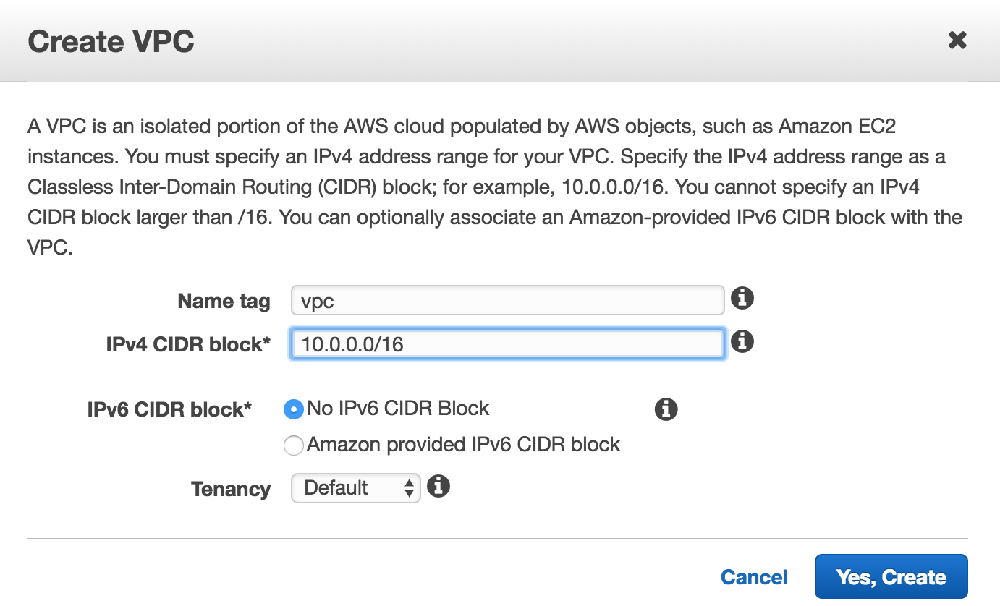

자세한 내용을 보고 싶으면 Amazon VPC란 무엇인가?를 참고하면 된다.
VPC(Virtual Private Cloud)란?
가상의 네트워크라고 보면 된다.
네트워크는 분산되어 있는 컴퓨터 자원들끼리 통신이 가능하게 끔 구축되어있는 환경 정도로 이해하면 될 것 같다.
즉, 네트워크에는 네트워크 외부와 통신이 가능한 인터넷 뿐만 아니라 네트워크 내부에서만 통신이 가능한 인트라넷 등등이 있다.
그 앞에 가상이 붙었다 싶이 물리적으로 네트워크를 구성한 게 아니라 논리적인 단위로 네트워크를 구성한 것이다.
이렇듯 클라우드 컴퓨팅은 많은 레이어들을 추상화 해놓고, 자동화 해놓음으로써 물리적으로 구축하기 힘든 환경을 손쉽게 제공해준다는 장점이 존재한다.
VPC 생성

VPC는 Region에 생성되므로
서비스하려는 region을 고민하고 신중하게 생성해야한다.
여기서는 VPC Wizards 대신에 직접 VPC를 만들어 볼 것이다.
AWS 콘솔에서 VPC 서비스로 이동해서 좌측 탭 중에 Your VPCs를 클릭하고, Create VPC를 클릭한다.

Name Tag와 IPv4 CIDR Block을 정해줘야하는데,
AWS 공식 문서에서는
RFC 1918에 명시된 private ip를 권장하고 있다.
vpc와 같은 서비스는 전 세계에서 공통으로 사용하는 서비스이고 IP 주소는 자원을 식별하기 위한 주소이므로 충돌이 일어나면 안 된다.
따라서 private ip를 추천하는 것 같고, ip class 별 private ip는 다음과 같다.
- A 클래스 - 10.0.0.0 - 10.255.255.255 (cidr block 10.0.0.0/8)
- B 클래스 - 172.16.0.0 - 172.31.255.255 (cidr block 172.16.0.0/12)
- C 클래스 - 192.168.0.0 - 192.168.255.255 (cidr block 192.168.0.0/16)
vpc에서 netmask는 16(65536개의 네트워크, 65536개의 호스트) ~ 28(약 26억개의 네트워크, 16개의 호스트)을 지정해줘야한다.
이렇게만 진행하면 간단하게 VPC를 생성했으니 이제 다음으로 Public Subnet을 만들어보자.